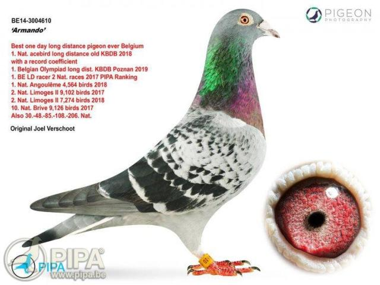

Pasiunea pentru porumbei voiajori – un mod de viață în columbofilie
Columbofilia nu este doar un hobby, ci o adevărată artă, o tradiție care
leagă generații de iubitori de porumbei. De-a lungul timpului, aceste păsări
extraordinare au devenit simboluri ale vitezei, inteligenței și loialității, captivând inimile
fiecărui columbofil.
Participarea la competiții este una dintre cele mai mari provocări și satisfacții
pentru un columbofil. Pregătirea porumbeilor necesită multă muncă, atenție și, desigur,
cele mai bune accesorii porumbei, de la hrană de calitate la inele de identificare. Un antrenament
bine gândit poate face diferența între un campion și un simplu participant.
Pentru a avea cei mai valoroși porumbei, mulți pasionați participă la licitații, unde
pot achiziționa păsări cu un pedigree impresionant. Aceste evenimente sunt adevărate puncte de întâlnire pentru
comunitatea columbofilă, oferind ocazia de a învăța unii de la alții și de a descoperi exemplare de excepție.
În lumea columbofiliei, fiecare pigeon are propria poveste. Fie că zboară spre casă dintr-o cursă
de sute de kilometri sau este crescut cu grijă pentru generațiile viitoare, fiecare pigeon este o sursă de
mândrie și pasiune. Prin dedicare și dragoste pentru aceste păsări, columbofilia rămâne un domeniu fascinant,
în care respectul pentru natură și competiția corectă merg mână în mână.
În lumea FCI, porumbeii sunt clasificați în funcție
de performanțele lor în competiții internaționale. Participarea la evenimente organizate de FCI oferă șansa de a concura
alături de cei mai buni crescători de porumbei din întreaga lume.
Pentru orice columbofil, este esențial să înțeleagă conceptul de orientare a porumbeilor, adică
abilitatea lor de a-și găsi drumul spre casă de la distanțe mari. Această caracteristică remarcabilă a fost studiată intens
de-a lungul anilor și rămâne un subiect fascinant în columbofilie.
O scurta istorie asupra columbofiliei
Încă din antichitate, porumbeii au fost folosiți ca mesageri, ducând vești importante pe distanțe uriașe. În Evul Mediu, regii și comandanții de oști se bazau pe acești porumbei pentru a transmite informații cruciale pe câmpul de luptă. Pe măsură ce tehnologia a avansat, rolul lor s-a schimbat, iar astăzi sunt apreciați în special pentru frumusețea și viteza lor în competiții.
Participarea la competiții este una dintre cele mai mari provocări și satisfacții pentru un columbofil. Pregătirea porumbeilor necesită multă muncă, atenție și, desigur, cele mai bune accesorii porumbei, de la hrană de calitate la inele de identificare. Un antrenament bine gândit poate face diferența între un campion și un simplu participant.
Pentru a avea cei mai valoroși porumbei, mulți pasionați participă la licitații, unde pot achiziționa păsări cu un pedigree impresionant. Aceste evenimente sunt adevărate puncte de întâlnire pentru comunitatea columbofilă, oferind ocazia de a învăța unii de la alții și de a descoperi exemplare de excepție.
Tipurile de competitii pentru porumbei voiajori
În columbofilie, competițiile de porumbei voiajori sunt împărțite în mai multe categorii, în funcție de distanța parcursă. Iată o descriere scurtă pentru fiecare dintre cele patru principale:
Viteza(100-300 km)
Este cea mai scurta si rapida categorie. Aici se pune accent pe explozia de start si orientarea rapida.
Potrivita pentru porumbeii tineri sau debutanti.
Demi-fond(300 - 500 km)
O competitie in care se imbina viteza cu rezistenta. Necesita antrenamente mai intense si o conditie fizica
mai buna. Populara in randul columbofililor datorita echilibrului dintre distanta si dificultate.
Fond(500 - 800 km)
Testeaza anduranta si strategia porumbelului. Conditiile meteo devin un factor important.
Porumbeii de fond trebuia sa aiba o recuperare rapida intre etape.
Maraton(800 - 1200+ km)
Cea mai dura categorie, rezervata celor mai puternici porumbei.
Dureaza de obicei mai multe zile, iar porumbeii trebuie sa aiba o rezistenta exceptionala.
Necesita o selectie genetica riguroasa si o pregatire de lunga durata.
Noutați din lumea columbofila
Sorin Cotîrlă – Un nume de referință în columbofilia clujeană
Pentru Sorin Cotîrlă, din localitatea Copăceni, județul Cluj, columbofilia nu este doar un hobby,
ci o moștenire de familie transformată într-o adevărată artă a competiției.
Membru activ al Clubului „Mihai Viteazul” Turda,
Sorin s-a impus în lumea curselor de porumbei prin curajul de a risca și prin ambiția de a concura la
cele mai solicitante categorii – Maraton și Extrem. Stilul său de joc îndrăzneț a dat roade,
mulți dintre porumbeii săi acumulând norme la Palmares și aducându-i numeroase titluri județene și provinciale.
În acest interviu, descoperim povestea unui columbofil dedicat, strategiile sale de succes și provocările pe
care le-a depășit pentru a deveni un nume de referință în columbofilia clujeană.
Andrei Cornici – Un tânăr maratonist cu rezultate de excepție în sezonul 2024
În localitatea Sânmărghita, județul Cluj, pasiunea pentru columbofilie se transmite din
generație în generație, iar Andrei Cornici este dovada vie a acestui fapt. Membru activ
al Clubului Dej din 2016, Andrei a început să-și construiască drumul spre performanță încă
din 2018, când a obținut primele rezultate notabile la nivel județean. Anul 2023 i-a adus
numeroase trofee și recunoaștere în provincie, însă adevărata consacrare a venit în sezonul 2024.
Cu un palmares bogat la categoriile de Maraton și rezultate de excepție în cadrul Clubului Gold,
Andrei Cornici demonstrează că munca și pasiunea moștenită din familie pot duce la succes.
Armando, cel mai scump porumbel din istorie

Armando supranumit "Cristiano Ronaldo" in lumea porumbeilor voiajori
a fost vandut la licitatie in anul 2019 pentru suma record de 1,25 milioane de euro.
Acesta a obtinut multiple titluri la curse de fond si maraton in Belgia.
Un videoclip despre unul dintre cei mai legendari porumbei din istorie, "Best Kittel"
Un videoclip despre de ce sunt porumbeii voiajori atat de scumpi
Columbofilia este hobby-ul de a crește, antrena și participa la competiții cu porumbei voiajori. Acest hobby implică îngrijirea porumbeilor, antrenarea lor pentru a se întoarce acasă de la distanțe mari și, în multe cazuri, participarea la competiții organizate.
Cum pot începe să practic columbofilia?
Pentru a începe în columbofilie, este recomandat să:
Contactezi un club columbofil local pentru îndrumare
Construiești sau achiziționezi un porumbar adecvat
Achiziționezi câțiva porumbei de calitate de la crescători cu experiență
Înveți despre nutriția, sănătatea și antrenamentul porumbeilor
Te înregistrezi la federația națională de columbofilie pentru a participa la competiții
Ce costuri implică acest hobby?
Costurile în columbofilie variază semnificativ în funcție de nivelul la care dorești să practici acest hobby. Cheltuielile principale includ:
Construirea porumbarului: 500-5000€ în funcție de dimensiune și materiale
Achiziționarea porumbeilor: de la 50€ pentru începători până la mii de euro pentru exemplare de competiție
Hrana și suplimentele: aproximativ 200-500€ anual
Vaccinuri și tratamente veterinare: 100-300€ anual
Taxe de club și competiții: 50-200€ anual
Ceasuri și sisteme electronice de cronometrare: 500-1500€
Porumbei celebri și recorduri
Recorduri de preț în licitațiile de porumbei
În ultimii ani, prețurile pentru porumbeii de elită au atins valori record:
Armando - 1,25 milioane € (2019, Belgia)
New Kim - 1,6 milioane € (2020, Belgia)
Bolt - 310.000 € (2013, Belgia)
Nadine - 400.000 € (2017, Belgia)
Majoritatea acestor porumbei au fost achiziționați de colecționari și crescători din China, unde columbofilia a devenit extrem de populară în ultimul deceniu.
Recorduri de viteză și distanță
Porumbeii voiajori pot atinge viteze impresionante și pot parcurge distanțe uriașe:
Viteza medie: 60-80 km/h în condiții normale
Viteza maximă înregistrată: peste 140 km/h (cu vânt favorabil)
Cea mai lungă distanță parcursă: peste 1800 km (în competiții organizate)
Durata maximă de zbor continuu: până la 24 de ore în anumite condiții
Oferte speciale pentru membrii comunității
Pachete pentru începători - REDUCERE 20%
Pentru cei care doresc să înceapă acest hobby, oferim pachete complete care includ:
2 perechi de porumbei tineri din linie de competiție
Set complet de hrană și suplimente pentru 3 luni
Manual de inițiere în columbofilie
Consultanță gratuită timp de 6 luni
Reducere de 15% la primul set de inele de identificare
Preț pachet: 350€ (în loc de 440€)
Porumbei din linii de campioni - NOUTATE 2024
Am adus în România descendenți direcți din liniile campionilor europeni:
Linia "Kittel" - specializată pentru curse de viteză
Linia "Armando" - campion la maraton
Linia "Barcelona" - specialistă în probe de fond
Prețurile încep de la 200€ pentru pui și 500€ pentru adulți cu performanțe dovedite.
Pentru membri ai clubului nostru oferim posibilitatea de a achiziționa în rate.
Cursuri de perfecționare în columbofilie
Organizăm lunar seminarii cu experți internaționali pe diverse teme:
Strategii de împerechere pentru performanță
Nutriție avansată pentru porumbeii de competiție
Tehnici moderne de antrenament
Prevenirea și tratarea bolilor specifice
Taxa de participare: 50€/seminar sau abonament anual de 200€ (6 seminarii)
Sfaturi pentru îngrijirea porumbeilor
Regim alimentar recomandat
Nutriția corectă este esențială pentru sănătatea și performanța porumbeilor voiajori:
În sezonul de repaus: Amestec de cereale cu conținut moderat de proteine (12-14%)
În perioada de reproducere: Amestec bogat în proteine (16-18%) și suplimente de calciu
În sezonul competițional: Amestec energetic bogat în grăsimi și carbohidrați
Post-competiție: Amestec de recuperare cu electroliți și vitamine
Se recomandă și suplimentarea periodică cu vitamine, minerale și probiotice, mai ales în perioadele de efort intens.
Program de antrenament pentru competiții
Un program eficient de antrenament pentru porumbeii de competiție include:
Antrenamente zilnice în jurul porumbarului (30-60 minute) pentru menținerea condiției fizice
Antrenamente la distanță progresivă:
Săptămâna 1-2: 5-10 km
Săptămâna 3-4: 20-30 km
Săptămâna 5-6: 50-80 km
Săptămâna 7-8: 100-150 km
Perioade de odihnă și recuperare între antrenamentele intense
Adaptarea programului în funcție de condițiile meteorologice și starea porumbeilor